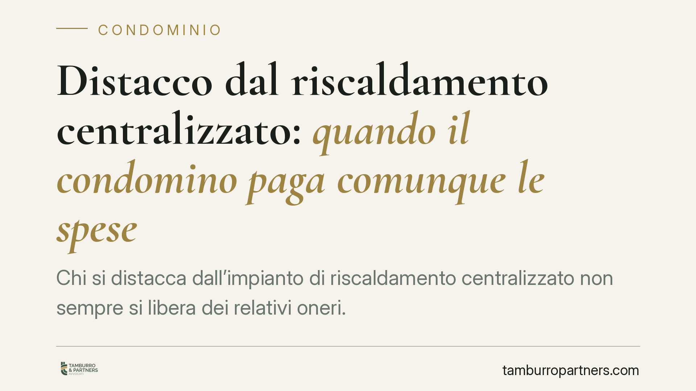
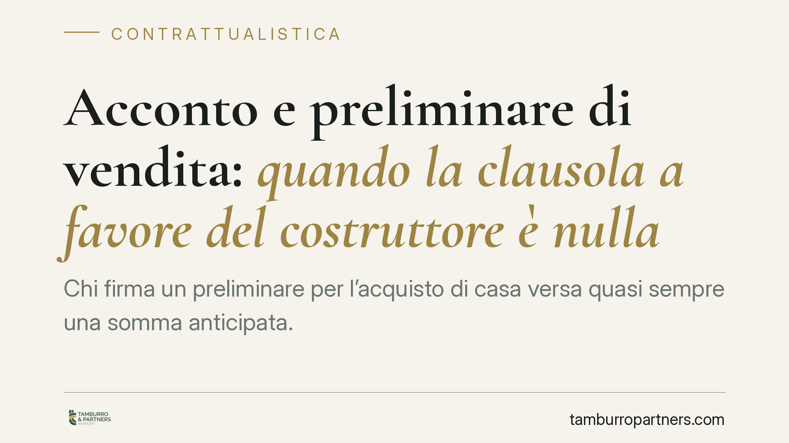
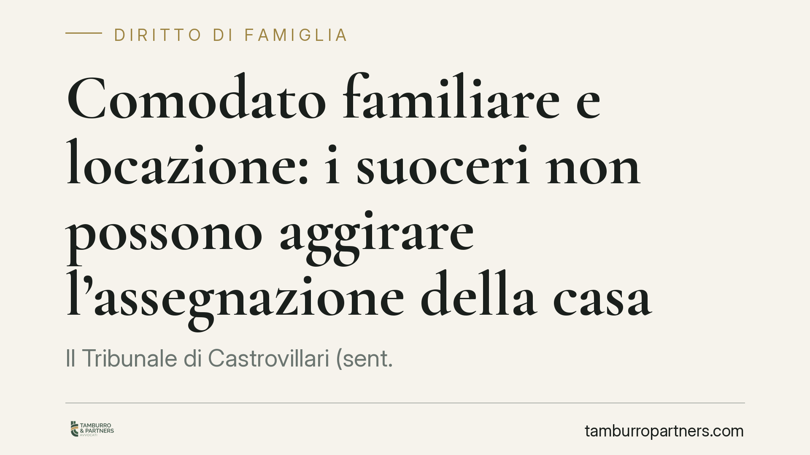
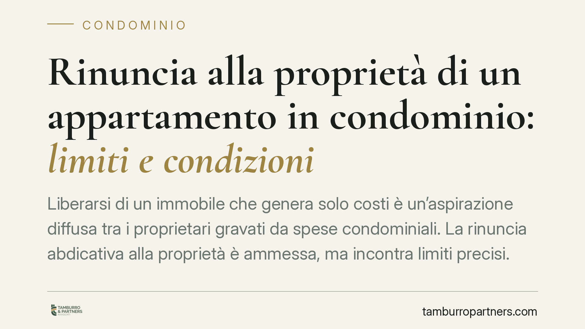
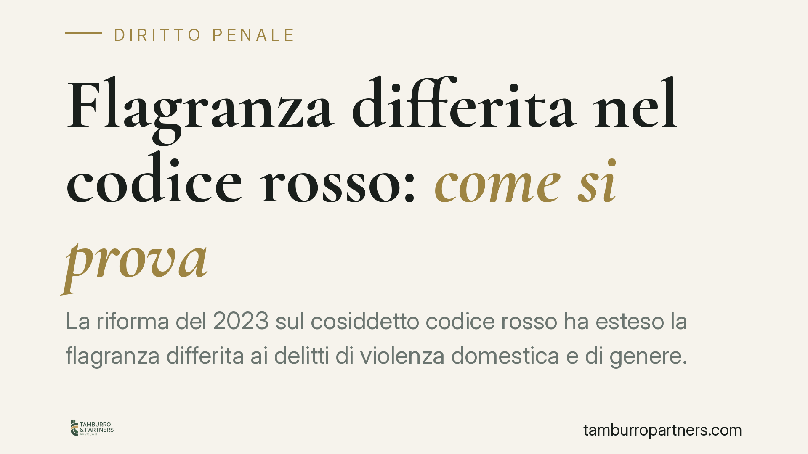
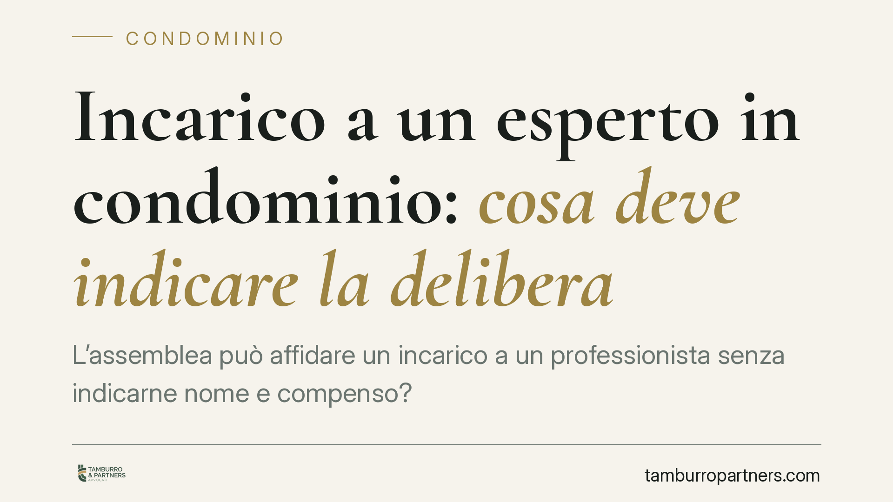
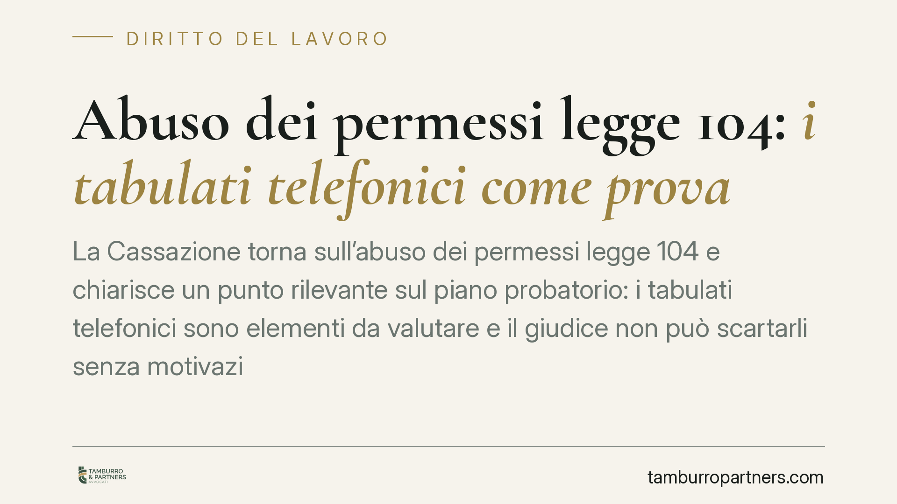
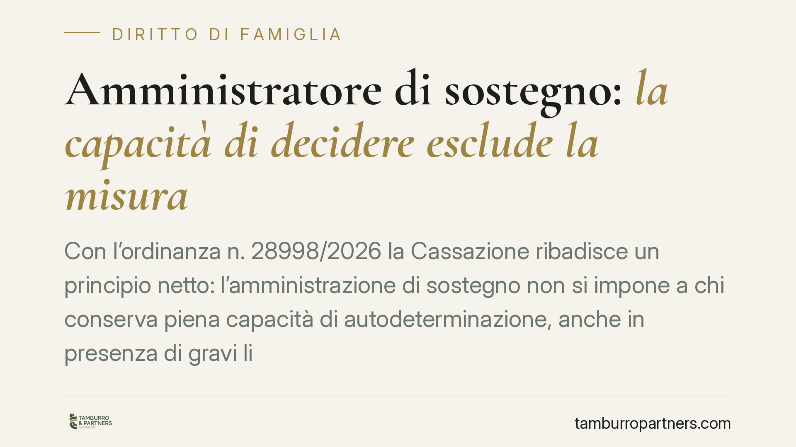
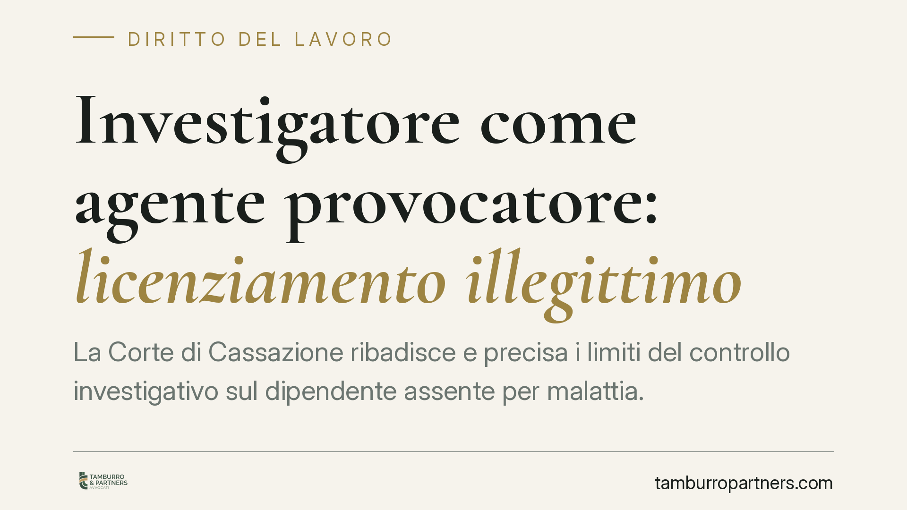
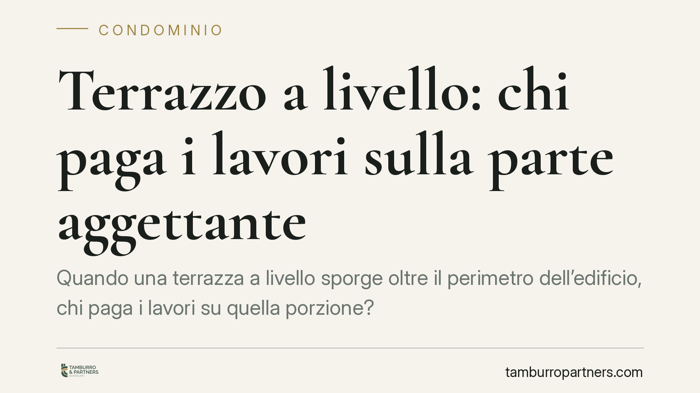

Alcoltest e lingua dell'automobilista: il diritto all'interprete nelle zone bilingui
Un orientamento giurisprudenziale valorizza il diritto dell'automobilista a comprendere gli atti del controllo stradale, specie nelle province bilingui come Bolzano. Quando l'accer…

Impugnazione delle delibere condominiali: la mancata mediazione non salva il soccombente dalle spese
Un condomino impugna una delibera, la causa finisce in tribunale e il condominio non si presenta in mediazione. Chi perde deve comunque pagare le spese? La regola generale è chiara…

Eredità con immobile abusivo: la divisione è nulla?
La presenza di un immobile abusivo nell'asse ereditario può bloccare la divisione tra coeredi. Le Sezioni Unite della Cassazione hanno fissato i confini della nullità degli atti di…

Interessi maggiorati ex art. 1284 c.c. sui debiti in causa
Il saggio di interesse maggiorato previsto dall'art. 1284 comma 4 c.c. torna al centro del dibattito. Una pronuncia recente, citata nelle cronache giuridiche ma della quale va veri…
Mutuo cointestato e separazione: chi paga può chiedere il rimborso?
Quando una coppia si separa resta spesso un nodo pratico: il mutuo cointestato. Se uno solo dei coniugi continua a pagare le rate, può pretendere la metà dall'altro? La risposta ca…
Testamento olografo smarrito: vale ancora o è revocato?
Un testamento scritto a mano dal defunto, ma mai ritrovato dopo il decesso. Vale ancora o si considera cancellato? Il Tribunale di Firenze (sent. 2762/2026) conferma che l'irreperi…

Violazioni del regolamento condominiale: risponde il proprietario per l'inquilino?
Chi concede in locazione un immobile in condominio resta esposto verso gli altri condomini se l'inquilino viola il regolamento. La giurisprudenza di merito conferma un dovere di vi…

Salario giusto e retribuzione adeguata: cosa cambia in busta paga
Un accordo tra sindacati confederali e associazioni d'impresa torna sul tema del cosiddetto "salario giusto", ancorato ai contratti collettivi più rappresentativi e a meccanismi di…

Distacco dal riscaldamento centralizzato: quando il condomino paga comunque le spese
Chi si distacca dall'impianto di riscaldamento centralizzato non sempre si libera dei relativi oneri. Con la sentenza 6618/2026 la Cassazione ribadisce che una clausola del regolam…

Acconto e preliminare di vendita: quando la clausola a favore del costruttore è nulla
Chi firma un preliminare per l'acquisto di casa versa quasi sempre una somma anticipata. Ma se poi non conclude, il costruttore può trattenere tutto? La questione tocca la discipli…

Comodato familiare e locazione: i suoceri non possono aggirare l'assegnazione della casa
Il Tribunale di Castrovillari (sent. 642/2026) ha dichiarato nullo il contratto di locazione con cui i suoceri, proprietari dell'immobile, lo hanno affittato al solo figlio quando …

Ordine di demolizione dell'abuso edilizio: perché non si prescrive
L'ordine di demolizione di un abuso edilizio non si cancella con il tempo. Secondo recenti pronunce della Cassazione penale, ha natura reale e ripristinatoria: non è una pena, segu…

Rinnovi contrattuali e imposta sostitutiva: cosa prevede il testo in discussione
Secondo le indicazioni emerse dai lavori sulla manovra, gli aumenti retributivi derivanti dai rinnovi contrattuali potrebbero beneficiare di una tassazione agevolata, con un tetto …

Assegno divorzile e garanzie bancarie: il peso delle fideiussioni prestate per l'ex coniuge
Chi ha firmato fideiussioni per sostenere l'attività o i debiti dell'ex coniuge si chiede se quel rischio patrimoniale pesi nel giudizio sull'assegno divorzile. Il tema tocca la co…

Diritto di abitazione del coniuge superstite: nessun diritto sulla casa del suocero
Il coniuge che resta vedovo ha diritto ad abitare nella casa familiare. Ma questo diritto vacilla quando l'immobile non apparteneva al defunto: se era del suocero o in comunione co…

Frontalino del balcone ammalorato: chi paga il rifacimento?
Con l'ordinanza n. 21856/2026 la Cassazione torna sul riparto delle spese per il frontalino dei balconi aggettanti. Quando l'elemento concorre al decoro architettonico della faccia…

Uso delle parti comuni in condominio: quali limiti sono legittimi
Chi vive in condominio conosce il problema: posti auto insufficienti, cortili contesi, locali comuni usati da pochi. Fino a che punto regolamento e assemblea possono limitare l'uso…

Rinuncia alla proprietà di un appartamento in condominio: limiti e condizioni
Liberarsi di un immobile che genera solo costi è un'aspirazione diffusa tra i proprietari gravati da spese condominiali. La rinuncia abdicativa alla proprietà è ammessa, ma incontr…

Fotovoltaico sul tetto comune: diritti del singolo condomino
Il singolo condomino può installare pannelli fotovoltaici sul tetto comune senza passare dall'assemblea. Lo prevede l'art. 1122-bis del Codice civile, che tutela l'autonomia energe…

Condizionatore sul fondo del vicino: servitù senza atto notarile
L'unità esterna di un condizionatore che insiste sul fondo confinante può dare luogo a una servitù anche senza atto notarile, quando al momento della divisione dei fondi esistono o…
Licenziamento disciplinare e vizi di forma: quando scatta il reintegro e quando l'indennità
Non ogni vizio del licenziamento disciplinare produce lo stesso effetto. Un conto è il recesso comunicato oralmente, un altro la contestazione mancata o tardiva. La differenza non …

Flagranza differita nel codice rosso: come si prova
La riforma del 2023 sul cosiddetto codice rosso ha esteso la flagranza differita ai delitti di violenza domestica e di genere. Significa che la polizia giudiziaria può arrestare an…

Incarico a un esperto in condominio: cosa deve indicare la delibera
L'assemblea può affidare un incarico a un professionista senza indicarne nome e compenso? Una recente pronuncia di merito risponde di no: la delibera priva di elementi essenziali è…
Sciopero illegittimo nella scuola: rischi per il docente precario
Nel comparto scuola l'adesione a uno sciopero dichiarato illegittimo dalla Commissione di garanzia può incidere sia sul rapporto di lavoro in corso sia sulla posizione nelle gradua…
Email aziendali del dipendente cessato: cosa può fare il datore di lavoro
Il Garante per la protezione dei dati personali ha sanzionato un'azienda per aver mantenuto attiva e consultato la casella email di un dipendente dopo la fine del rapporto. La deci…

Abuso dei permessi legge 104: i tabulati telefonici come prova
La Cassazione torna sull'abuso dei permessi legge 104 e chiarisce un punto rilevante sul piano probatorio: i tabulati telefonici sono elementi da valutare e il giudice non può scar…

Amministratore di sostegno: la capacità di decidere esclude la misura
Con l'ordinanza n. 28998/2026 la Cassazione ribadisce un principio netto: l'amministrazione di sostegno non si impone a chi conserva piena capacità di autodeterminazione, anche in …

Investigatore come agente provocatore: licenziamento illegittimo
La Corte di Cassazione ribadisce e precisa i limiti del controllo investigativo sul dipendente assente per malattia. Quando l'investigatore non si limita a osservare ma sollecita a…

Terrazzo a livello: chi paga i lavori sulla parte aggettante
Quando una terrazza a livello sporge oltre il perimetro dell'edificio, chi paga i lavori su quella porzione? Secondo un orientamento della Cassazione, le spese per la parte aggetta…
Accesso ai dati personali in condominio: cosa può chiedere il condòmino
Il condòmino ha diritto di sapere quali dati personali lo riguardano e come vengono trattati dall'amministratore. È un diritto garantito dal GDPR, che impone al gestore del condomi…